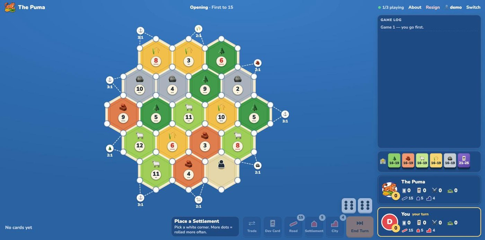

Project writeup · November 2026
The Puma
A Catan 1v1 bot I trained from scratch on my gaming PC. It never saw a human game and never imitated another bot. It learned only by playing against itself.

How it works
The model. A small graph neural network reads the board as a graph of its 54 corners and 72 edges. It has two outputs: a policy (which move looks best) and a value (who is winning). It has about 279,000 parameters, small enough to run fast on a CPU at play time.
The search. At each decision, an AlphaZero-style tree search guided by the network looks ahead. At the practice table that is about 3 seconds and roughly 1,000 simulations per move on a single CPU process; forced moves are instant.
Training. Self-play reinforcement learning with PPO, over 2,885 iterations and about 4.0 million games. Early on, games were long and often didn't finish, so a small shaping reward nudged them toward an end. It faded to zero by iteration 200, and after that the only reward was winning. Average game length fell from 174 turns to 87 as the bot improved.
The pipeline. Eleven CPU worker processes play games in parallel and send positions through shared memory to a single GPU process, which evaluates them in batches of about 130. Over the last 100 iterations that sustained 4,625 positions and 15,700 network evaluations per second, on an AMD Ryzen 5 3600 (6 cores), a GTX 1080 and 16 GB of RAM.
Fair play. The arena tells the bot only what a player at the table could know: the board, its own cards, public counts and the dice history. It never sees your hand or which development cards you hold, and every move takes at least two seconds so speed can't leak information.
Results
Every number below is for the version the arena serves (checkpoint 2,885, about 779 million positions) or its own training run, measured on the same PC.
Share of games won. Whiskers are 95% intervals (normal approximation); the line marks an even 50%.
Show as a table
| Opponent | Setup | Won | Win rate | 95% interval |
|---|---|---|---|---|
| Catanatron AlphaBeta (depth 2, no peeking at hidden cards) | network alone | 197 / 200 | 98.5% | ≈96–99.5% |
| OpenHex ladder bot, neural network, rated 1462 | 1 s search | 120 / 200 | 60.0% | ±6.8 |
| OpenHex ladder bot, neural network, rated 1462 | network alone | 109 / 200 | 54.5% | ±6.9 |
| OpenHex search bot, rated ~1700, search capped below its ladder setting | 1 s search | 104 / 200 | 52.0% | ±6.9 |
| Its own 389M-position checkpoint | network alone | 314 / 600 | 52.3% | ±4.0 |
Against Catanatron. With the network alone and no search, it won 195 to 200 of 200 games at every one of 29 checkpoints from 389 million to 769 million positions.
Against the OpenHex ladder. Each match was 200 games on 100 boards with seats swapped, refereed by the opponent's own engine. With one second of search a move it beat a neural-network bot rated 1462 (60%), and it held an even 52% against a stronger search bot whose search was capped well below its ladder setting. The Puma isn't registered on the ladder, so it has no official rating.
Against people. It is 11–3 against human players at the practice table so far. Fourteen games is a small sample, so read it as a sign it holds up, not a measurement.
Code
The browser arena is open source: github.com/johngpuma/catan-1v1-arena. The training and search code is not public yet.